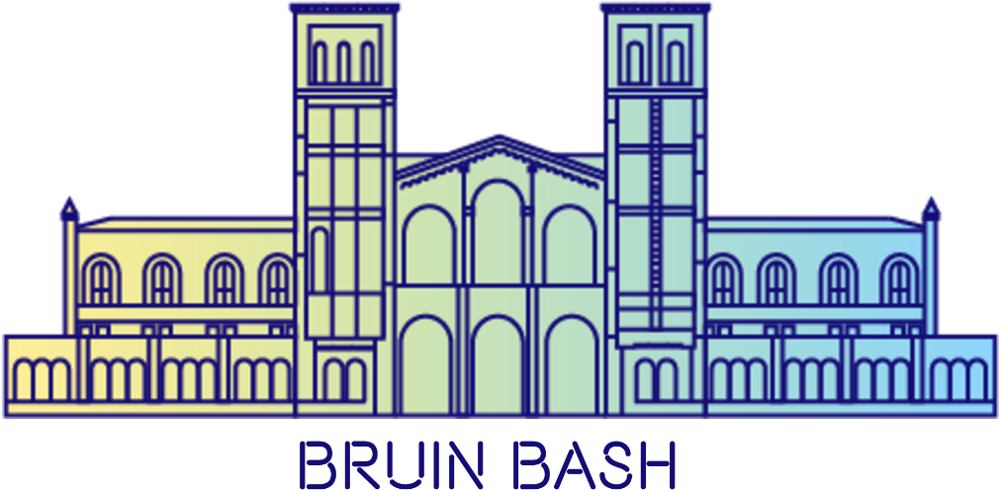

FLOOR SEATING
100/200 SEATING
- This year's concert tickets to Bruin Bash will be distributed via an online lottery only to current undergraduate UCLA students with a valid BruinCard.
- Please be aware that the performers for Bruin Bash will not be released until a later date.
- A lottery will open on 07/22 solely for floor seating for Pauley Pavilion. Please note these will be standing seats, and no chairs will be provided to students in this section. To enter, students must enter the lottery by 11:59pm on 08/05 at the following link: LINK
- Recipients will be chosen on a random basis.
- Students that do not receive floor seats from the lottery will be informed via email on 08/06, and will automatically be entered into the lottery for 100 and 200 level seating. Please refer to this map [hyperlinked] for reference regarding seating in Pauley Pavilion.
- Students that do receive floor seats from the lottery will receive an email on 08/06, from which they can reject the ticket and be re-entered into the general lottery for 100 and 200 level seating. The ticket must be rejected by 08/13.
- If the student would like to accept the ticket, then no further action will be required until the day of Bruin Bash to claim the wristband.
- Note that rejecting the floor ticket and re-entering into the lottery does not guarantee a ticket.
- We emphasize that due to the capacity of the venue, not every student will be guaranteed a ticket. We ask that you only enter the lottery if you have genuine interest in attending the event. If you do not receive a ticket to the concert, there are still many other aspects of Bruin Bash that may be enjoyed, including the festival and free film, with more info to come at bruinbash.ucla.edu
- This year's concert tickets to Bruin Bash will be distributed via an online lottery only to current undergraduate UCLA students with a valid BruinCard.
- Please be aware that the performers for Bruin Bash will not be released until a later date.
- Please refer to this map [hyperlinked] for reference regarding seating in Pauley Pavilion.
- A lottery will open on 08/15 at 12am for seating in the 100 and 200 seating levels of Pauley Pavilion. To be entered, students must enter the lottery by 11:59pm on 08/29 at the following link: LINK
- Students cannot enter this lottery if they have a pending floor seating ticket. If the student has been selected for a floor ticket, the floor ticket must be rejected to enter this lottery.
- Recipients will be notified on 08/30 via email.
- Recipients will be chosen on a random basis.
- There is only one lottery for both the 100 and 200 seating levels. On the day of Bruin Bash, students that received a ticket from the lottery will have the opportunity to claim a wristband for either the 100 seating level or the 200 seating level, based on a first-come-first-served basis.
- Again, we emphasize that due to the capacity of the venue, not every student will be guaranteed a ticket. We ask that you only enter the lottery if you have genuine interest in attending the event. If you do not receive a ticket to the concert, there are still many other aspects of Bruin Bash that may be enjoyed, including the festival and free film, with more info to come at bruinbash.ucla.edu
- Your Account ID is your BruinCard number (not your ucla.edu email address). If you do not remember your password, please click the "forgot your password" link and a temporary password will be sent to your email address on file.
- Click "Add to Cart" for the lottery.
- Select a Delivery Method of "BruinCard".
- Submit your request. A confirmation email will be sent to verify your entry.